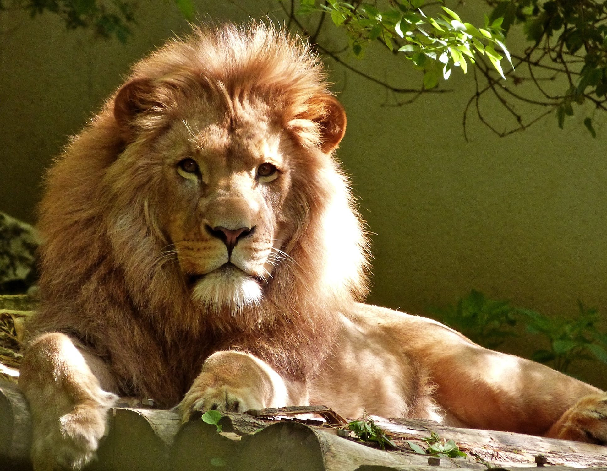

颜色也可以使用 hsl() 函数符被定义为色相 - 饱和度 -
亮度（Hue-saturation-lightness）模式。HSL 相比 RGB
的优点是更加直观：你可以估算你想要的颜色，然后微调。它也更易于创建相称的颜色集合。（通过保持相同的色相并改变亮度/暗度和饱和度）。
hello world
7月10日盘后，科大讯飞发布中报业绩预告，科大讯飞在Q2扭转了一季度的不利局面，公司Q2预计实现营业收入约49亿元，较上年同期增长约10%，环比增长约70%；预计实现毛利约19亿元，较上年同期增长约7%，环比增长约60%；此外，公司第二季度完成经营活动产生的现金流量净额超1亿元，较去年同期增加逾5.5亿元。

